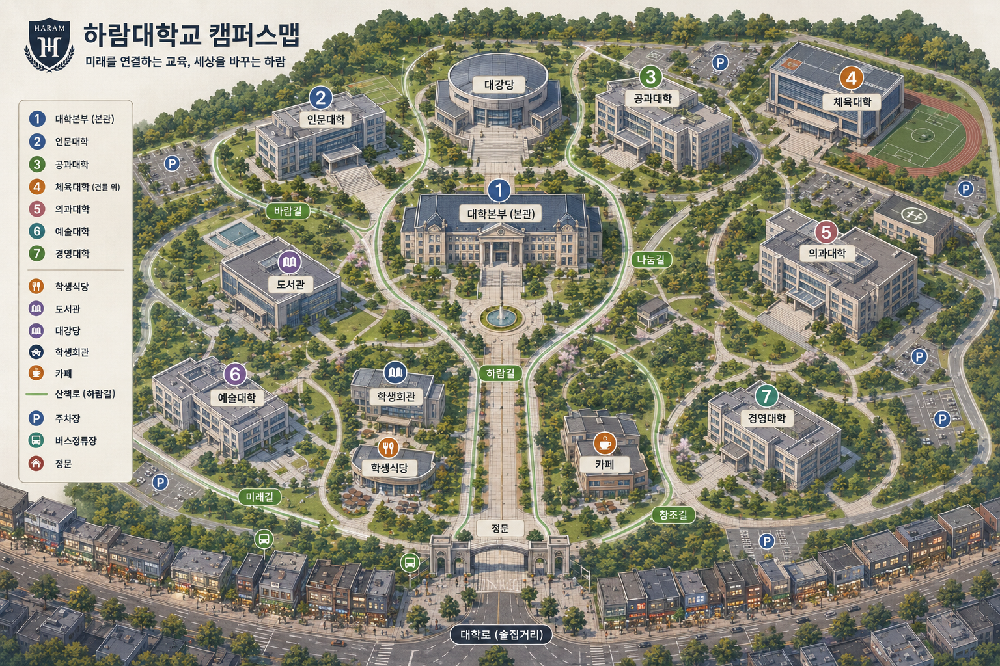
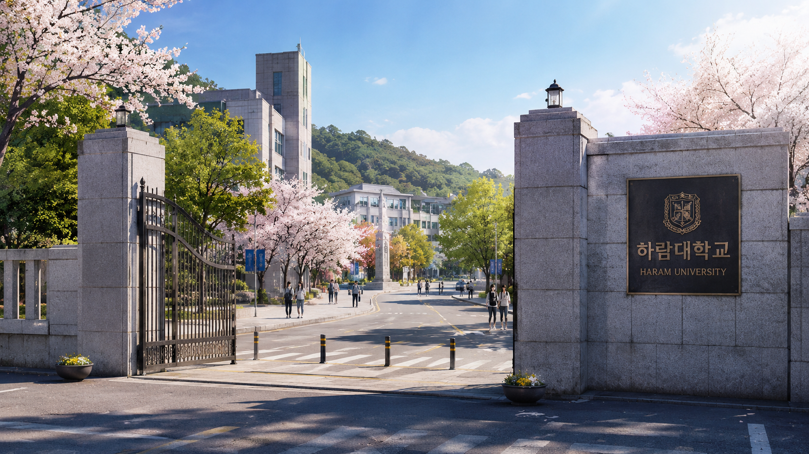
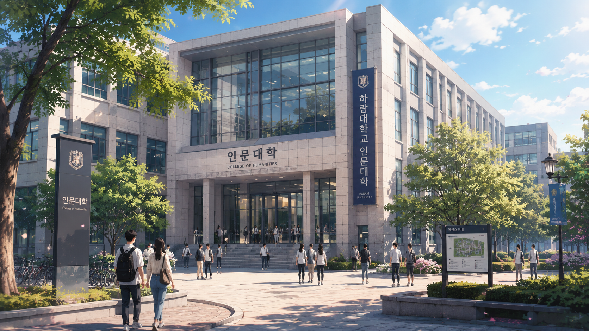
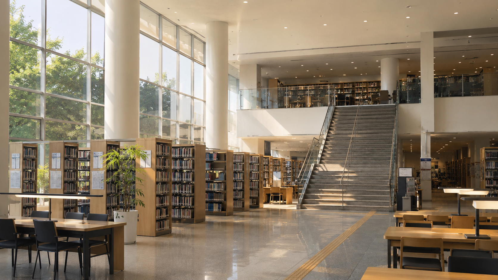
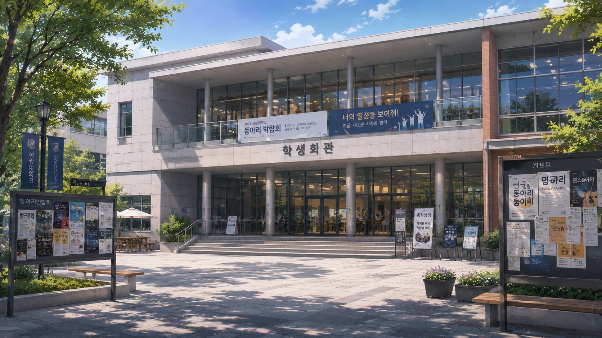
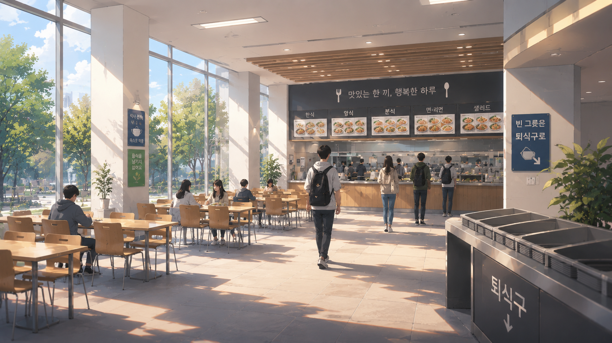
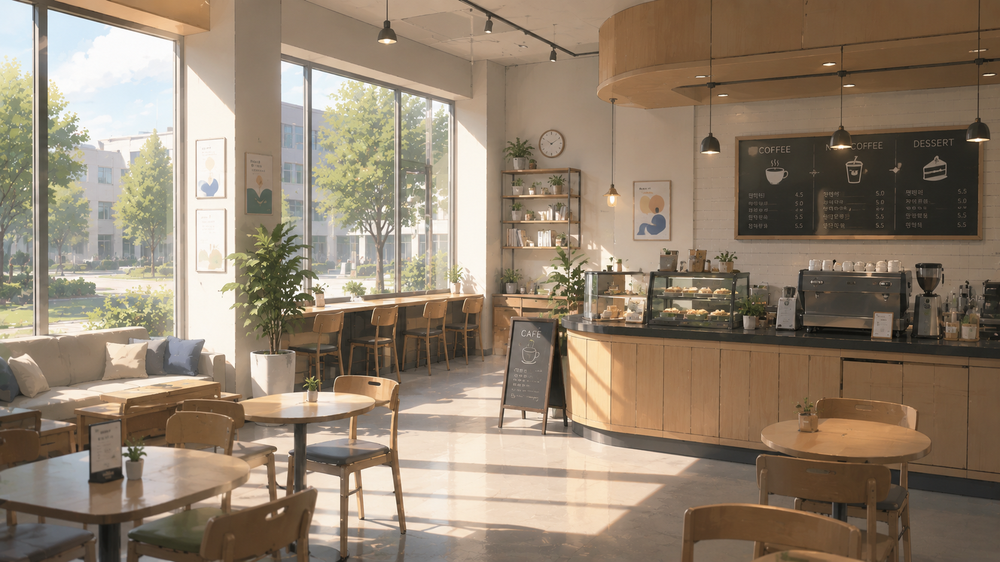
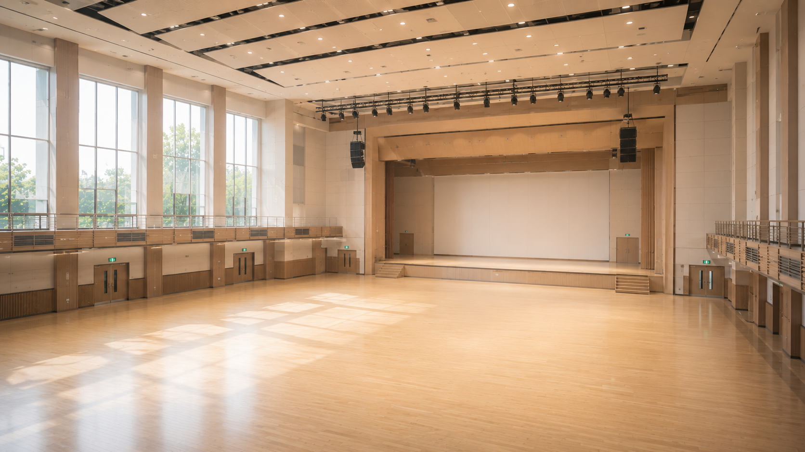
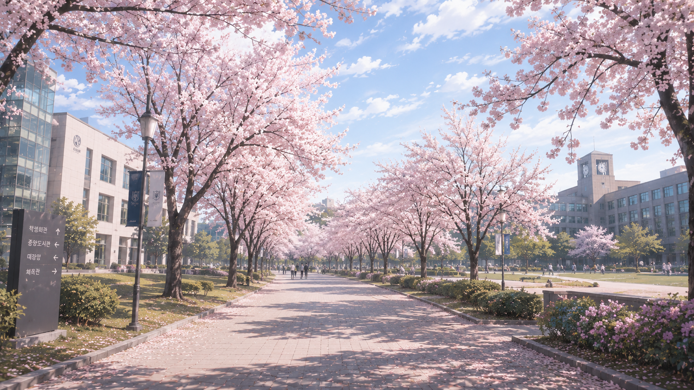
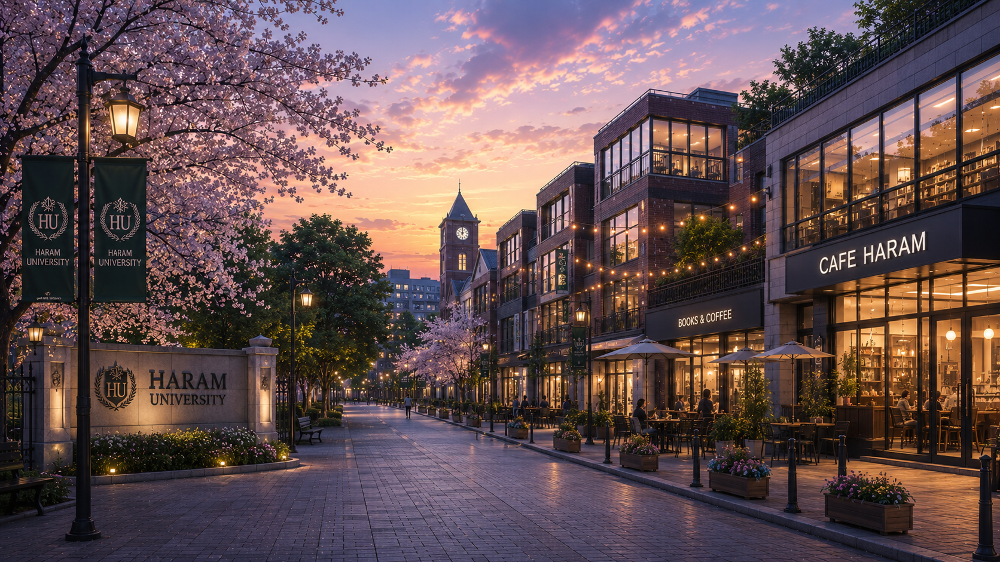

하람대학교 소개
하람대학교는 자유로운 학풍과 도심형 캠퍼스 환경을 바탕으로 학생들이 학문, 인간관계, 문화 활동을 함께 경험할 수 있는 열린 대학을 지향합니다.
벚꽃이 흩날리는 캠퍼스.
새로운 강의실과 낯선 사람들.
그리고 아직 시작되지 않은 수많은 이야기.
입학안내 버튼을 누르면
배경음악과 함께 하람대학교 캠퍼스에 입장합니다.
서울특별시 강남구를 배경으로 한 가상 사립 종합대학교
하람대학교는 자유로운 학풍과 도심형 캠퍼스 환경을 바탕으로 학생들이 학문, 인간관계, 문화 활동을 함께 경험할 수 있는 열린 대학을 지향합니다.
지식의 습득을 넘어, 스스로 생각하고 타인과 소통하며 사회 속에서 자신의 길을 찾아가는 인재 양성을 목표로 합니다.
벚꽃이 이어지는 하람길, 조용한 도서관, 활기찬 학생회관과 카페가 어우러진 캠퍼스입니다.


하람대학교의 첫 인상을 보여주는 캠퍼스 입구입니다.

국문, 영문, 사학, 철학, 심리학과의 중심 공간입니다.

과제와 시험 준비, 조용한 만남이 이어지는 공간입니다.

동아리와 학생회 활동이 이루어지는 활기찬 공간입니다.

점심과 저녁 시간 가장 많은 학생들이 모이는 장소입니다.

과제, 대화, 휴식이 자연스럽게 이어지는 캠퍼스 카페입니다.

입학식, 특강, 공연, 축제가 열리는 대형 행사 공간입니다.

벚꽃과 산책로가 이어지는 하람대학교의 대표 길입니다.

카페, 음식점, 술집이 모인 캠퍼스 밖 거리입니다.
하람대학교 인문대학 주요 학생 20명
수업, 과제, 동아리, 친구, 연애, SNS.
당신의 선택에 따라 대학생활은 전혀 다른 이야기가 됩니다.